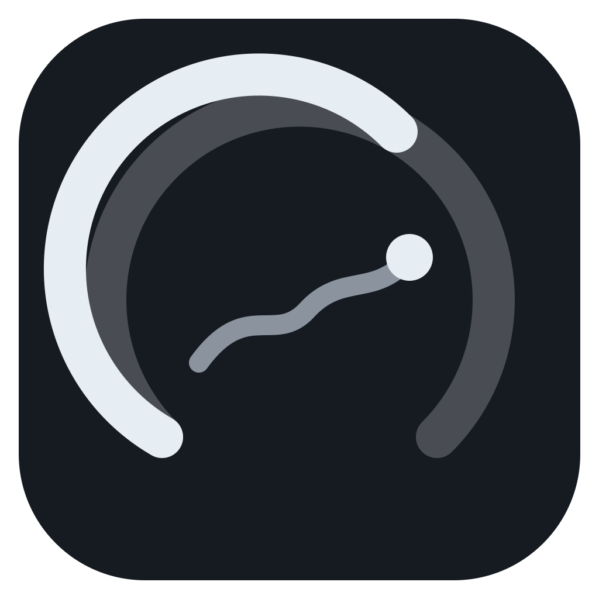
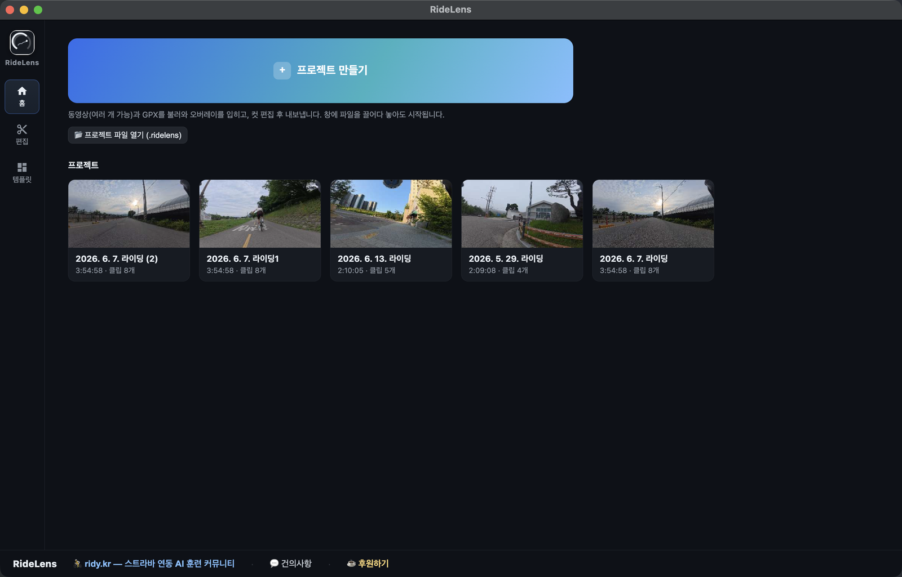
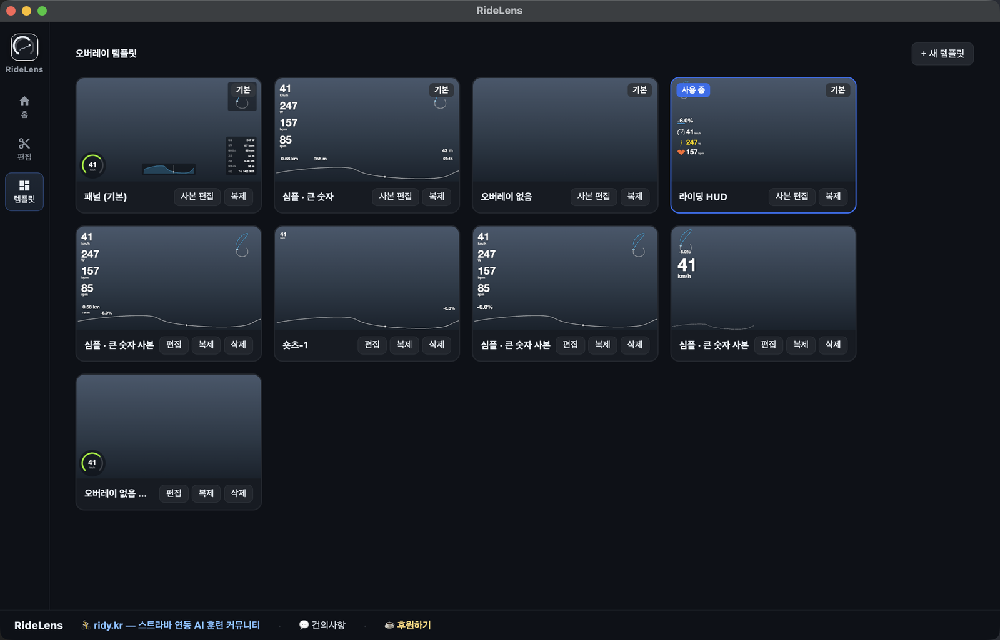
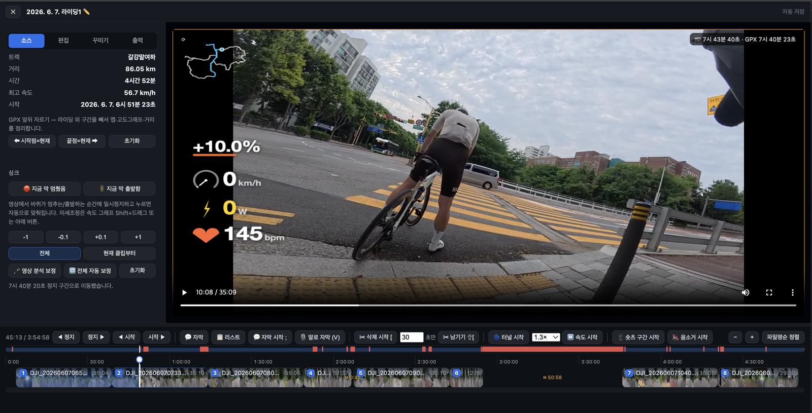
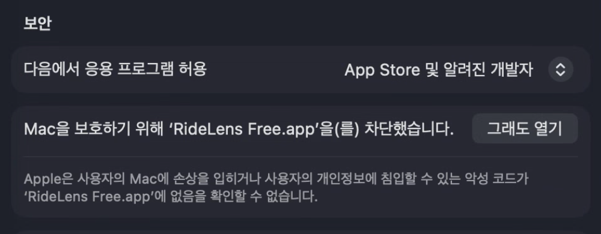
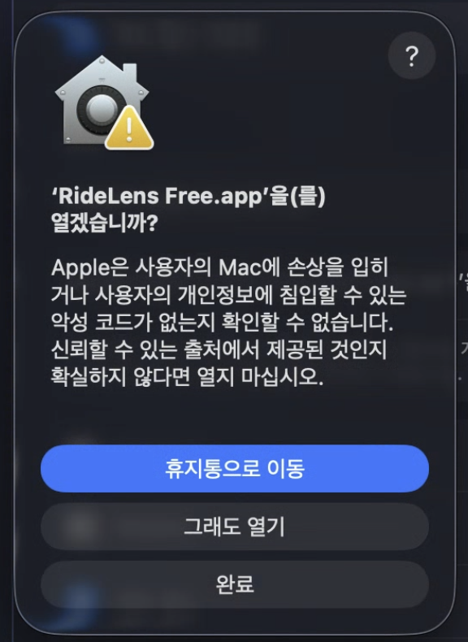
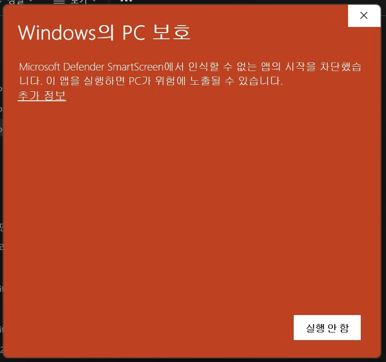
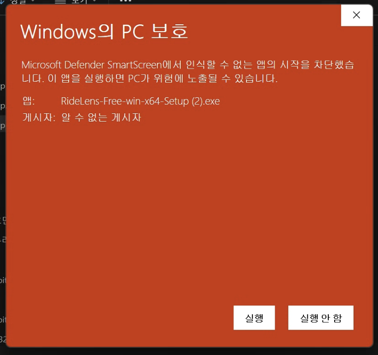

Overlay speed, gradient, power and heart rate on your footage. All you need is a GPX or FIT file.
macOS (Apple Silicon) · Windows (x64) · Free
🌐 The app UI is Korean today — English UI is coming very soon. Overlays (km/h · W · bpm) are language-neutral.
Drop in your footage and ride data — RideLens does the rest.
Works with FIT files from any bike computer (Garmin, Wahoo, Bryton) and Strava GPX. Composites speed, gradient, power, heart rate and cadence onto your video.
Analyzes video motion to align GPX automatically. Corrects GPS lag at stops, starts and climbs — even detects tunnels.
Trim sections, change speed, add captions with TTS and CC0 background music. Edit to export, all in one app.
Turns hours of riding into a 15-minute highlight reel, picking the best moments from your ride data (speed, gradient, power).
One click extracts a 1-minute 9:16 vertical Short with title, captions and brand banner — ready for socials.
Fast 4K export with hardware encoding (VideoToolbox / NVENC / QSV / AMF). Keep your original quality.

Each ride is a project — drag in video and GPX to start, everything auto-saves and restores.
Freely place and resize speed, power, cadence, heart rate, gradient, minimap and elevation widgets. Build and switch between templates — panel, minimal, HUD, Shorts.


Overlay preview, multi-clip timeline, sync correction, cuts and captions — all in one view, refined live.
Mark a highlight range and get a 9:16 vertical Short automatically — with title, captions and banner, ready to post.
Create a project, import video and GPX, then sync — all in one minute. (Korean narration)
① Unzip → ② Drag RideLens Free.app to Applications → ③ Paste this line into Terminal — first launch only.  xattr -cr "/Applications/RideLens Free.app" && open "/Applications/RideLens Free.app"
💡 If the app is elsewhere, type xattr -cr then drag the app into the Terminal window to autofill its path.
Prefer no Terminal? Double-click the app, dismiss the warning, then System Settings → Privacy & Security → click "Open Anyway" as shown below
⚙️ Open Privacy & Security (opens System Settings directly on a Mac)
Run Setup.exe. If the blue SmartScreen window appears, click "More info" first — that reveals the hidden "Run anyway" button (first launch only). The warning appears because the beta is not code-signed yet; nothing is wrong with the app.  
⚠️ RideLens is a beta and not yet code-signed (Apple notarization / Windows signing) — hence the macOS and SmartScreen warnings. Open it once with the steps above and it runs normally from then on. Proper signing is on the way. Please report any issues!
Start free — and help shape what comes next.
Questions or feature requests?
Post on the ridy.kr community, or use the 💬 Feedback / 📣 Contact channels at the bottom of the app.
Your feedback shapes every release. 🙏